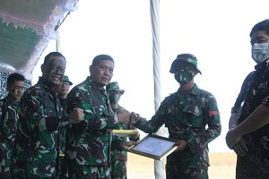

INOVASI ALAT
AMFU
Latar Belakang Pembuatan Alat
Pada awal terciptanya inovasi Atlas Monitoring Firing Unit pada tahun 2020 kami sebagai petembak rudal mistral ATLAS, melaksanakan latihan menembak senjata berat di lumajang, namun tidak berhasil meluncurkan misil karena terkendala akan keadaan posisi awan yang menghalangi panas yang di pancarkan oleh pesawat sehingga kami gagal menembak. Dan 2020 di latihan antar kecabangan di Baturaja juga kami gagal menembak karena sistem mendeteksi misile error. Kami tidak bisa membuktikan karena belum ada alat untuk menyimpan rekaman penembakan. sehingga tidak bisa menjelaskan secara rinci kendala yang di alami. Pada waktu penembkan orang dari MBDA france membawa alat yang bisa merekam Penembakan rudal ATLAS. kami memiliki ide untuk membuat alat yang sama dengan menabah fitur pada alat kami. Setelah kami melakukan penelitian dan percobaan akhirnya lahirlah AMFU generasi (pertama) di mana alat itu pertama kali di perkenalkan di pusdik Arhanud Ketika kami melaksanakan Penataran petembak terpusat 2021. Di lihat langsung oleh Dirbinlat. Dan mendapat apresiasi dari Danpussen. Dan uang pembinaan dari Dankodiklat . sehingga kami berkeinginan mengembangkan sampai lahirlah AMFU generasi ke 2

Logik pembuatan alat
kami bagi menjadi 2 bagian yaitu :
1. Bagian kelistrikan.
a. kita memiliki sumber arus 12V, dan di setiap alat atau komponen membutuhkan beberapa arus yang berbeda.
contohnya: layar 12V, DVR 11V, lampu Led 5V, kipas 12V, nircable sistem 9V DLL.
untuk itu kita membutuhkan regulator arus yang mengatur arus ke setiap komponen (PSU).
Maka kita buatkan jalur regulasi dengan menutrunkan -1,5V dari arus yang di anjurkan,
untuk menjaga komponen agar tidak bekerja pada arus maksimal.
b.Batrai > kita membutuhkan batrai yang kompitele dengan pertimbangan.
alat kita ini porteble sehingga membutuhkan batrai yang kuat dan tahan lama.
kemudian pertimbangan juga untuk chargernya.
2. Bagian video
a.kita harus mengerti jenis soket atau jenis video yang di keluarka oleh video output.
contoh jenis soket > DVI,AV,HDMI,S-VIDEO,VGA, MINI HDMI DLL.
contoh jenis format video > MPeG,3Gp,Mp4,Avi,DLL.
b. Mengubah output dari sumber menjadi yang kita butuhkan.
contoh > layar membutuhkan spesifikasi HDMI dengan format AVI.
sumber video dengan Soket DVI engan format Mp4.
Maka dari itu kita butuh suatu alat untuk mengubah dari sumber dengan soket dan format yang sesui dengan spesifikasi.
c.Begitu pula dengan nircable. menyesuikan dengan spesifikasi dari modul wireless.
Tujuan Alat
1. Membantu dalam membantu dalam melatihkan petembak Rudal ATLAS.
2. Hasil bidikan kamera Thermal dapat dijadikan bahan evaluasi.
3. Dapat mengirimkan hasil bidikan secara live streaming.
KARAKTERISTIK UMUM
(1) Menampilkan Tampilan dari kamera thermal dengan layer 5’ inchi.
(2) Dapat merekam hasil pembidikan.
(3) Dapat dibagikan secara live ke banyak user dengan membagi ling video via ( google meet).
(4) Dapat difungsikan sebagai Simulator penembakan.
(5) menggunakan batrai Internal sehingga lebih portable
(6) hasil rekaman dapat di simpan format AVI.
MAIN UNIT
adalah alat yang berfungsi untuk menampilkan tampilan layar dimana di maen unit terdapat :
1. layar 5 inchi
2. Kompas
3. Digital Video Recorder
4. Lampu indictor
5. Swit on / off
6. Control layar

SOKET TIO ( Two In One)
SOKET TIO adalah kabel soket yang berfungsi untuk membagi data ke Maen Unit dan ke Converter Cable unit.
CONVERTER CABLE UNIT
CCU adalah alat untuk mengubah data sehingga dapat dibaca oleh handphone untuk di streamingkan.

GWS (Ganendra wireless sistem)
GWS adalah alat untuk mengubah data sehingga dapat dibaca oleh handphone untuk di streamingkan
KARAKTERISTIK TEKNIS
a) Berat keseluruhan : 5337 g.
b) Berat maen unit : 2409 g.
c) Panjang mean unit : 19.0 cm.
d) Batrai Litium : (Lipo 3S 12V).
e) Jarak streaming : Bergantung jaringan Internet.
f) Layar mean unit : 5 Inchi.
g) Charger batery : 12 v dc 2A.
h) video format : PAL / NTSC.
i) Ukuran video : VGA (640x480) D1(720x480) HD(1240X450).
j) Max memory support : 32 GB.
k) Panjang kabel CCU : 5.000 cm.
l) Panjang kabel TIO : 3.000 cm.
m) tahun pembuatan : 2021 ( masih dalam pengembangan).
PIAGAM
1.Letjen TNI A.M. PUTRANTO / DANKODIKLAT( latbak jatrat 2021).
2.Mayjen TNI NISSAN S /DANPUSSEN ARHANUD(Latbak jatrat 2021).

3.Mayjen TNI ANDI M / PANGDIVIF 2 KOSTRAD ( Prajurit prestasi 2021).

4.Mayjen TNI HARYANTO / PANGDIVIF 2 KOSTRAD ( Prajurit prestasi 2023 ).


5.Mayjen TNI HARIS SARJANA / DANPUSSEN ARHANUD ( COIN CHALLENGE pada kunker 2022)

KEGIATAN YANG DIIKUTI
1.Live streming pussen arhanud dan di tampilkan KASAD JEND TNI DUDUNG A.R pada kegiatan Latbak jatrat 2023.
Youtube Latbakjatrad 2023
2.Dilibatkan dalam kegiatan ZONA INTEGRITAS 2023.
3.Masuk 3 besar dalam Lomba SOEDIRMAN AWARDS Detik.com kandidat 3 besar Soedirman awards 2023